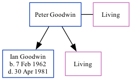

Peter S Goodwin
[ Home ] | [ Calendar ] | [ Surnames Index ] | [ Family History ]Peter Goodwin, the husband of Mavis E Cowell (the cousin on the mother's side of Nigel Horne), and married Mavis (with whom he had 2 children: Ian Derek and Sandra A, along with 1 surviving child) in Thanet, Kent, England around Feb 19611.
Children
- Ian Derek was born on Feb 7, 1962
Citations
- England & Wales, Marriage Index: 1916-2005 Online publication - Provo, UT, USA: The Generations Network, Inc., 2009.Original data - General Register Office. England and Wales Civil Registration Indexes. London, England: General Register Office. © Crown copyright. Published by permission of the Cont
Family Tree
Generated by ged2site. Last updated on Nov 13, 2024